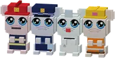
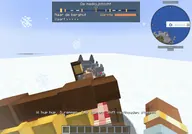
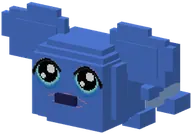

All storiesAlle verhalen
The guh stories and questlines, step by step, and the chapters of the FTB quest book.
De guhverhalen en questlines, stap voor stap, en de hoofdstukken van het FTB-questboek.
25 / 25
| NameNaam | KindSoort | KindSoort | AboutOver | |
|---|---|---|---|---|
 | Mother Vadsig and GuhbertMoeder Vadsig en Guhbert | StoryVerhaal | StoryVerhaal | Help Mother Vadsig find her little Guhbert: free him from the Mika camp, find the lost guh cake and have a...Help Moeder Vadsig haar kleine Guhbert terug te vinden: bevrijd hem uit het Mika-kamp, vind de verloren... |
 | The broken sledDe kapotte slee | StoryVerhaal | StoryVerhaal | The Sled Guh's sled on the Guh Peaks is broken. Find a sled runner, a guh bell and a pink ribbon, and she...De slee van de Slee-guh op de Guhpieken is kapot. Vind een sleeglijder, een guhbelletje en een roze lint, en... |
 | The Great Knabbel HeistHet Grote Knabbelroof | StoryVerhaal | StoryVerhaal | Opper-Mika has stolen every kaasknabbel. Make twelve Eyes of Vadsig, find the Knabbelkelder, open the portal...Opper-Mika heeft alle kaasknabbels gestolen. Maak twaalf Ogen van Vadsig, vind de Knabbelkelder, open het... |
 | The Grillguh's fire startersDe Aanmaakblokjes van de Grillguh | StoryVerhaal | StoryVerhaal | The Mikas stole the Grillguh's fire starters. Fix his barbecue and he teaches you his secret grill recipe.De Mika's hebben de Aanmaakblokjes van de Grillguh gejat. Maak zijn barbecue weer heel en hij leert je zijn... |
 | The Great Cosy PartyHet Grote Knusfeest | StoryVerhaal | StoryVerhaal | Mayor Vadsema is throwing the Great Cosy Party. Do the six party chores, keep the Kruimel-Mikas away from the...Burgemeester Vadsema organiseert het Grote Knusfeest. Doe de zes feesttaakjes, houd de Kruimel-Mika's weg van... |
 | JobsBeroepen | StoryVerhaal | StoryVerhaal | Four jobs, one time each: help the fire brigade, the police, the pharmacy and Bob the Guh Builder, and earn...Vier beroepen, elk één keer: help de brandweer, de politie, de apotheek en Bob de Guhbouwer, en verdien hun... |
 | Building a house togetherSamen een huisje bouwen | StoryVerhaal | StoryVerhaal | At the edge of every Knuffeldal town the Timmerguh is building a guh house.Aan de rand van elk Knuffeldal-stadje bouwt de Timmerguh een guhhuisje. |
 | Baltoguh and NomguhBaltoguh en Nomguh | StoryVerhaal | StoryVerhaal | In the snowy guh town of Nomguh, Rosy is ill. Only Baltoguh, half guh and half wolf, can bring the medicine...In het besneeuwde guhstadje Nomguh is Rosy ziek. Alleen Baltoguh, half guh en half wolf, kan het medicijn... |
 | Through the snowstormDoor de sneeuwstorm | StoryVerhaal | StoryVerhaal | The medicine ride with the Nomguh dog sled: through the snowstorm to the mountain hut and back.De medicijnrit met de hondenslee van Nomguh: door de sneeuwstorm naar de berghut en terug. |
 | The clone islandHet kloon-eiland | StoryVerhaal | StoryVerhaal | Professor Knabbelkloon wanted to clone a guh that could eat twice as many kaasknabbels.Professor Knabbelkloon wilde een guh klonen die dubbel zoveel kaasknabbels kon eten. Het werd de Guhtwo. |
 | The sky chapel and the cuddle heartHet Hemelkapelletje en het Knuffelhart | StoryVerhaal | StoryVerhaal | High in the clouds the cloud keeper looks after the cuddle heart.Hoog in de wolken past de wolkenhoeder op het Knuffelhart. Laat het weer kloppen, en een getemde guh die... |
 | Ohana on Guhwai'iOhana op Guhwai'i | StoryVerhaal | StoryVerhaal | A capsule crashed on Guhwai'i, with Experiment 626 inside. Lilo-guh wants him as a pet. Ohana means family!Op Guhwai'i is een capsule neergestort, met Experiment 626 erin. Lilo-guh wil hem als huisdier. |
| Quest book: Guhs & basisQuestboek: Guhs & basis | FTB chapterFTB-hoofdstuk | FTB chapterFTB-hoofdstuk | A chapter of the Guhs FTB quest book (texts in Dutch).Tem, kleed en knuffel je guh. VAHOEG! | |
| Quest book: De GuhmensieQuestboek: De Guhmensie | FTB chapterFTB-hoofdstuk | FTB chapterFTB-hoofdstuk | A chapter of the Guhs FTB quest book (texts in Dutch).Roze wol, kaassaus en heel veel guhs | |
| Quest book: Minigames & bijzondere plekkenQuestboek: Minigames & bijzondere plekken | FTB chapterFTB-hoofdstuk | FTB chapterFTB-hoofdstuk | A chapter of the Guhs FTB quest book (texts in Dutch).Spelen, winnen en vadsig verkleden | |
| Quest book: OnderwaterQuestboek: Onderwater | FTB chapterFTB-hoofdstuk | FTB chapterFTB-hoofdstuk | A chapter of the Guhs FTB quest book (texts in Dutch).Blub blub guh: de Diepe Guhzee | |
| Quest book: De GuhmaagQuestboek: De Guhmaag | FTB chapterFTB-hoofdstuk | FTB chapterFTB-hoofdstuk | A chapter of the Guhs FTB quest book (texts in Dutch).NJEG... HAP! Welkom in de buik | |
| Quest book: Het GuheindeQuestboek: Het Guheinde | FTB chapterFTB-hoofdstuk | FTB chapterFTB-hoofdstuk | A chapter of the Guhs FTB quest book (texts in Dutch).Opper-Mika heeft alle knabbels, njeg! | |
| Quest book: De GuhbarbecuetherQuestboek: De Guhbarbecuether | FTB chapterFTB-hoofdstuk | FTB chapterFTB-hoofdstuk | A chapter of the Guhs FTB quest book (texts in Dutch).Heet, heter, njeg! Help de Grillguh | |
| Quest book: Grotten, moeras & woudQuestboek: Grotten, moeras & woud | FTB chapterFTB-hoofdstuk | FTB chapterFTB-hoofdstuk | A chapter of the Guhs FTB quest book (texts in Dutch).Gatenkaas, moeras, woud en guhfamilies | |
| Quest book: KnuffeldalQuestboek: Knuffeldal | FTB chapterFTB-hoofdstuk | FTB chapterFTB-hoofdstuk | A chapter of the Guhs FTB quest book (texts in Dutch).Het Grote Knusfeest komt eraan! | |
| Quest book: Piep!Questboek: Piep! | FTB chapterFTB-hoofdstuk | FTB chapterFTB-hoofdstuk | A chapter of the Guhs FTB quest book (texts in Dutch).Pieppiepmuisjes en zielige knabbels | |
| Quest book: Lieve vadsjes van elkaarQuestboek: Lieve vadsjes van elkaar | FTB chapterFTB-hoofdstuk | FTB chapterFTB-hoofdstuk | A chapter of the Guhs FTB quest book (texts in Dutch).Hartjes, huisjes, klusjes en favorietjes. Njeg! | |
| Quest book: GuhverhalenQuestboek: Guhverhalen | FTB chapterFTB-hoofdstuk | FTB chapterFTB-hoofdstuk | A chapter of the Guhs FTB quest book (texts in Dutch).Baltoguh, Guhtwo, 626-guh, het Knuffelhart en de Timmerguh. Njeg! | |
| Quest book: Diertjes van de GuhmensieQuestboek: Diertjes van de Guhmensie | FTB chapterFTB-hoofdstuk | FTB chapterFTB-hoofdstuk | A chapter of the Guhs FTB quest book (texts in Dutch).Vinkjes, eendjes, egeltjes en... Sjokkel? |